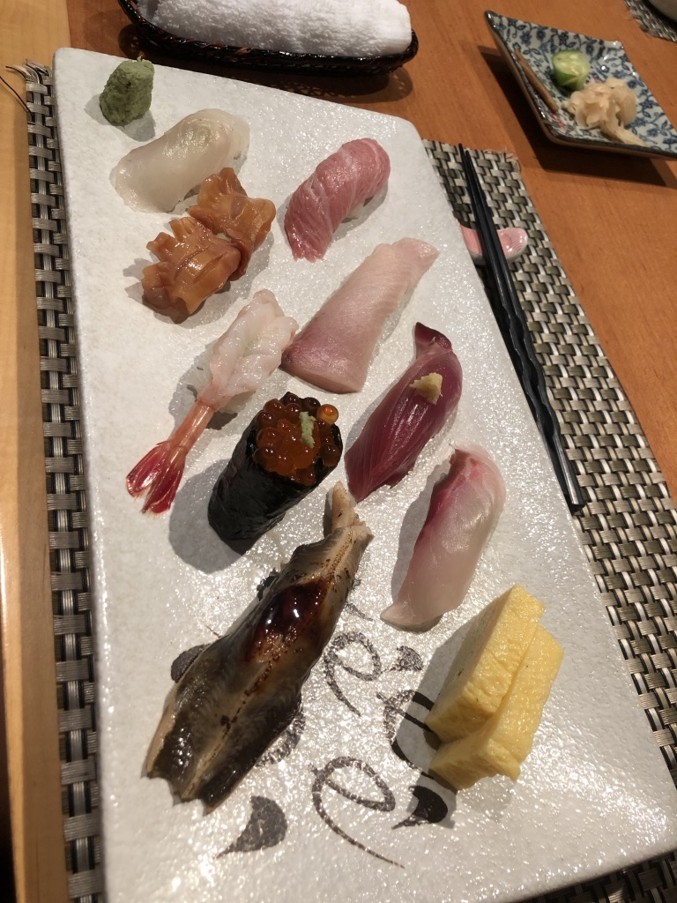

Hi! My name is Zoe and I have always loved trying new types of food and discovering the best restaurants wherever I go. I grew up in Hong Kong and this a city where there are always new restaurants constantly opening up. I want to guide travelers or even local Hong Kong residents and give them recommendations on the best places to go to for different cuisines.
I am currently located in Boston, studying at Babson College, but everytime I go back to Hong Kong for break, I am always excited to find the best food to eat with my friends and family. Hopefully my recommendations will be able to help you all discover what you love to eat!
My absolute favorite cuisine is Japanese, more specifically, I love sushi. There is always an abundance of sushi restaurants in Hong Kong and the picture below is from one of my favorite places - Ginza Okura, located in Tsim Sha Tsui, Hong Kong. Click on the different pieces of sushi to learn more about them.
